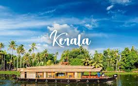
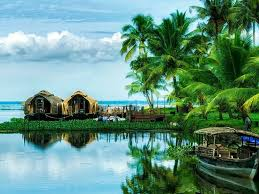
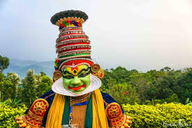

Pristine backwaters, coconut-palm fringed beaches, rejuvenating Ayurvedic massages and colourful festivals; Yes! You guessed it right. I am talking about God’s own country, Kerala.
One of the most picturesque places in India with a footfall of thousands of tourists every year, Kerala is tucked between Arabian Sea and the Western Ghats and is blessed with immense natural beauty.
Besides serene backwaters and pristine beaches, Kerala is also home to scenic hill stations and numerous wildlife sanctuaries.
Offering an umpteen number of tourist activities, Kerala is a must-visit destination for every traveller. From memorable houseboat stays to nature walks through the sprawling tea gardens to wildlife safari to mesmerizing Kathakali performance to savouring traditional dishes, Kerala has a lot to offer.
Price:20000 for couple

Top Attractions in Kerala

Things to Do in Kerala